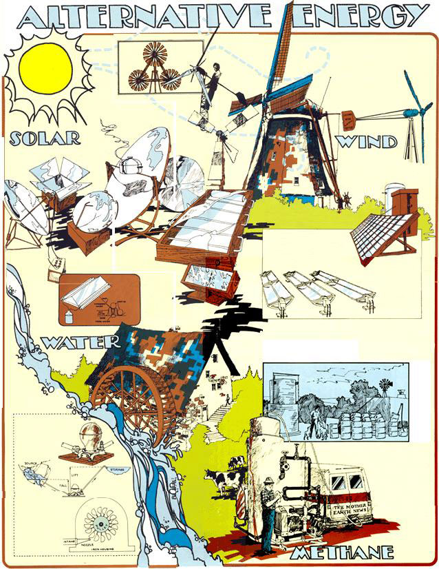

This solar oven was developed at the University of Florida, Gainesville, under the direction of Dr. E.A. Farber.
This windmill was patented in 1924 by W.M. Riggs of Arizona for driving pumps used in irrigation.
The Schaufelberger wind-power system is capable of supplying 2,000 watts of direct current. Such units have been made since 1938.
The Jacobs Wind Electric Plant, known as the Cadillac of wind-generation systems, was designed in the early 1930's by Marcellus L. Jacobs (now of Fort Myers, Florida). The unit produced 3,000 watts of either 32- or 110-volt DC power.
This solar cooker, designed in Wisconsin, is of parabolic construction.
Temperature required for cooking can be easily reached with this sun-powered cooker.
Homemade wind-generation units are appearing throughout the country. This working model was built in New Jersey by Steve Weichelt.
Europeans still use wind energy to grind grain and pump water. This "smock mill" is found in northern Europe. The sail-wing design possesses a functional beauty independent of any applied decoration. This is an extraordinarily sensitive and sophisticated machine.
Curly Milner's solar water heater consists of 3/4-inch diameter copper pipe soldered to a sheet of copper and mounted in an insulated wooden box. The collector is covered with a double glass top.
A solar thermoelectric generator for charging storage batteries.
A simple parabolic collector. The heat it absorbs from the sun is used to turn water into steam. The hot vapor then runs a small steam engine which, in turn, drives a generator that produces electricity.
Sunshine collectors like these are being considered as one answer to our nation's power shortage. Funds have been provided by the National Science Foundation to build a working model of a system that collects solar energy and converts it into electricity. Scientists envision "solar farms" in the desert, with the collectors providing shade in which grass and other crops may grow.
Here's a solar water heater consisting of a sheet-metal box covered by one layer of glass. Inside the unit is a thin copper plate to which copper tubes are soldered in a sinusoidal (straight and curved) configuration. The plumbing is connected to a water storage tank.
L. John Fry began to experiment with the production of methane over 20 years ago on a 1,000-head hog farm outside Johannesburg, South Africa. In an effort to dispose of his animals' manure, Fry designed and built this "sump" digester" which converts organic wastes (human, animal or plant) into [1] methane, an ignitable gas, and [2] a nitrogen-rich fertilizer.
Old water wheels - both working and dilapidated - can still be seen in parts of rural America. This is an example of an "undershot" mill.
A simplified solar still of low cost and easy construction.
THE Mother Earth News experimental methane generator - built on Richard Shuttleworth's cattle farm near Redkey, Indiana - has proven the practicality of producing an ignitable fuel from cow manure and water. This unit was designed and constructed by Shuttleworth, with the assistance of L. John Fry and Ram Bux Singh. Singh has been director of the Gobar Gas Research Station at Ajitmal in northern India for the past 20 years.
The hydraulic ram, widely used in this country before the advent of the rural electrification program can automatically pump water from its source to a higher elevation.
This Pelton wheel is a pressure turbine which runs off a gravity water system. Inside the unit's casing is a rotor with cups evenly spaced around its rim. A high-pressure stream of water hits the cups, turns the wheel and gives it speed and power.
|
 |
|
|